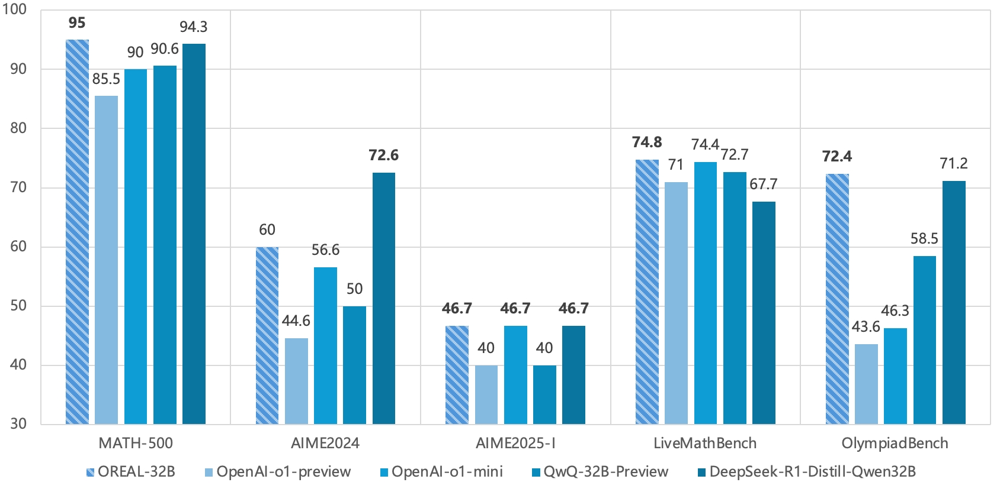
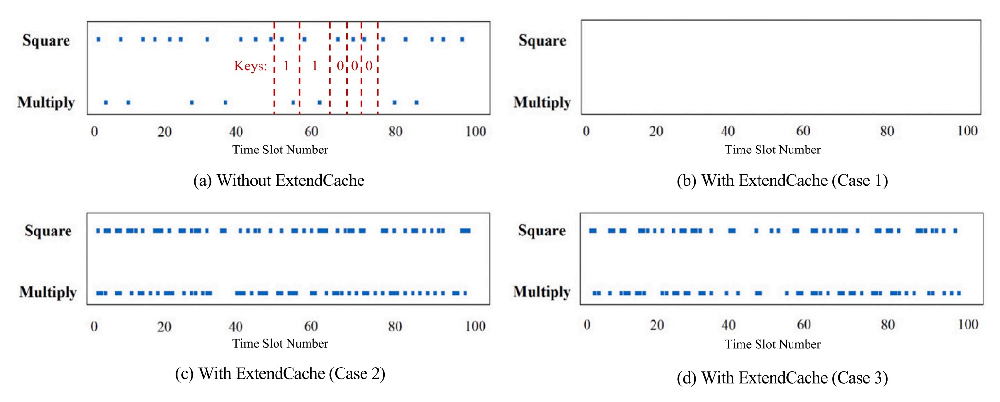

Yuzhe Gu 顾宇喆PhD StudentLarge Model Center, Shanghai AI Laboratory
|
|
Biography
I am a first-year PhD student at Shanghai Jiao Tong University, in the joint program at Shanghai AI Laboratory, advised by Wenwei Zhang and Kai Chen. Before that, I received the bachelor degree at Wuhan University in 2024.
My research interests lie primarily in the area of Large Language Model (LLM). I'm focusing on improving the reasoning and knowledge capabilities of LLMs. I also have experience about the reducing hallucination in LLMs, including the annotation, detection and mitigation of hallucinations.
Discussions and cooperations are welcomed!
News
- [2025.01] Our paper Mask-DPO is accepted by ICLR 2025.
- [2024.12] We release InternThinker, a powerful reasoning model.
- [2024.09] Our paper ANAH-v2 is accepted by NeurIPS 2024.
- [2024.05] Our paper ANAH is accepted by ACL 2024.
Publications
* denotes equal contribution.|  | Exploring the Limit of Outcome Reward for Learning Mathematical Reasoning
Chengqi Lyu*, Songyang Gao*, Yuzhe Gu*, Wenwei Zhang*, Jianfei Gao, Kuikun Liu, Ziyi Wang, Shuaibin Li, Qian Zhao, Haian Huang, Weihan Cao, Jiangning Liu, Hongwei Liu, Junnan Liu, Songyang Zhang, Dahua Lin, Kai Chen preprint [Paper] [Code] |
| Mask-DPO: Generalizable Fine-grained Factuality Alignment of LLMs
Yuzhe Gu, Wenwei Zhang, Chengqi Lyu, Dahua Lin, Kai Chen The Thirteenth International Conference on Learning Representations (ICLR) , 2025 [Paper] [Code] |
|
| ANAH-v2: Scaling Analytical Hallucination Annotation of Large Language Models
Yuzhe Gu*, Ziwei Ji*, Wenwei Zhang, Chengqi Lyu, Dahua Lin, Kai Chen The Thirty-eighth Annual Conference on Neural Information Processing Systems (NeurIPS) , 2024 [Paper] [Code] [Project] |
|
 |
ANAH: Analytical Annotation of Hallucinations in Large Language Models
Ziwei Ji*, Yuzhe Gu*, Wenwei Zhang, Chengqi Lyu, Dahua Lin, Kai Chen The 62nd Annual Meeting of the Association for Computational Linguistics (ACL) , 2024 [Paper] [Code] [Project] |
|  | One more set: Mitigating conflict-based cache side-channel attacks by extending cache set
Yuzhe Gu, Ming Tang, Quancheng Wang, Han Wang, Haili Ding Journal of Systems Architecture (JSA) [Paper] |
Co-author Papers
 |
BackCache: Mitigating contention-based cache timing attacks by hiding cache line evictions
Quancheng Wang, Xige Zhang, Han Wang, Yuzhe Gu, Ming Tang arXiv 2023, Under Review [Paper] |
| Redeem myself: Purifying backdoors in deep learning models using self attention distillation
Xueluan Gong, Yanjiao Chen, Wang Yang, Qian Wang, Yuzhe Gu, Huayang Huang, Chao Shen 44th IEEE Symposium on Security and Privacy (Oakland), 2023 [Paper] |
Projects
- InternThinker: a powerful reasoning model.
- Lagent: a lightweight open-source framework that allows users to efficiently build LLM-based agents
- InternLM: state-of-the-art open-source LLMs varying from 7B to 123B.
Awards
- Outstanding Undergraduate of Wuhan University, 2024
- Lei Jun Excellence Scholarship of Wuhan University, 2024 (10w RMB)
- First Prize Excellence Scholarship of Wuhan University, 2021, 2022, 2023